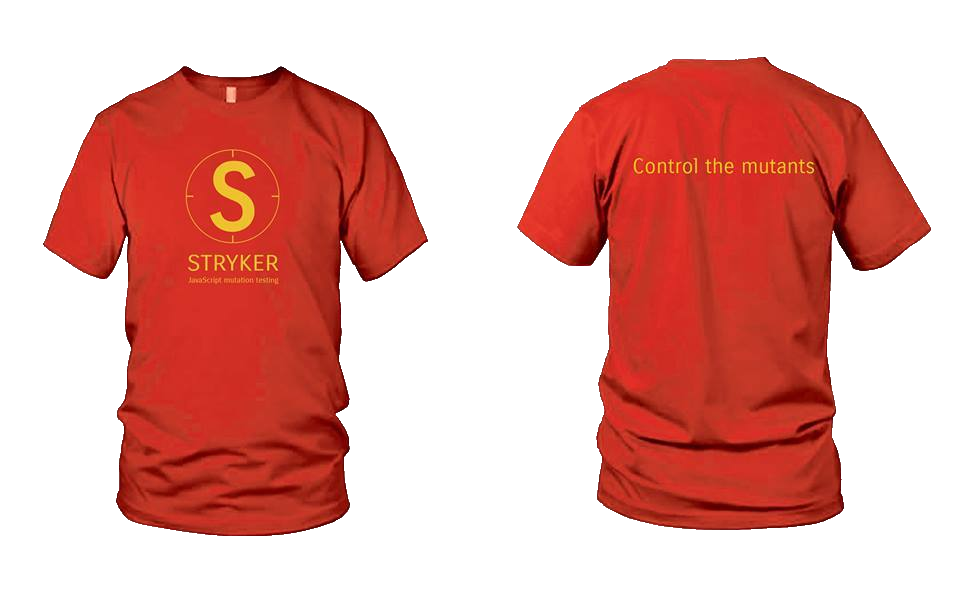

Stryker
Measure the effectiveness of JavaScript tests.
Measure the effectiveness of JavaScript tests.
Bugs, or mutants, are automatically inserted into your production code. Your tests are run for each mutant. If your tests fail then the mutant is killed. If your tests passed, the mutant survived. The higher the percentage of mutants killed, the more effective your tests are.
It's really that simple.
Well... code coverage doesn't really tell you anything about the effectiveness of your tests. Think about it, when was the last time you saw a test without an assertion, purely to increase the code coverage.
Imagine a sandwich covered with paste. Code coverage would tell you the bread is 80% covered with paste. Mutation testing, on the other hand, would tell you it is actually chococate paste and not... well... something else.
With Stryker, mutation testing finally arrives at the JavaScript world. It takes the best practices of existing mutation testing frameworks like PIT and Humbug, but with the open mentality of nodejs and the web. This is why Stryker is not a test runner or test framework. Indeed, why would it? There are already awesome test runners and test frameworks out there. Instead, Stryker empowers you to use what you like and focusses on being the best Mutation testing framework it can be.
Control more than 30 supported mutations, or write your own.
Use code analysis and parallel test runner processes to speed things up.
Free as in Speech. Maintained by the open source community at GitHub.
Create your own plugins to mutate, report or run tests using the Stryker API.
Use clever reports to sniff out surviving mutants and improve test effectiveness.
For someone who hates mutants... you certainly keep some strange company.
Oh, they serve their purpose... as long as they can be controlled.
Contribute and get a free t-shirt or sticker. As long as stock lasts.
